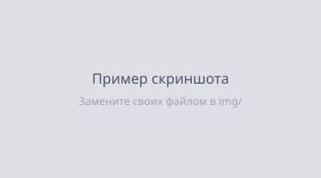

Gakumas Translation Data RU
Русский перевод игры Gakuen Idolmaster (Gakumas)
для gakuen-imas-localify.
Версии для ПК (DMM) и Android
Установка
Выберите платформу - вы увидите шаги установки и ссылку для скачивания.
Помощь и актуальные инструкции - на нашем Discord-сервере.
ПК (DMM)
Локализация для компьютерной версии игры через DMM. Кастомный шрифт для ПК идёт в комплекте.
Важно! Сохраните прогресс игры перед установкой!
Перед установкой или обновлением локализации сохраните данные игры, чтобы не потерять прогресс:
- Сделайте резервную копию папки с данными игры (путь указан в шагах установки ниже).
- Скриншотните и сохраните данные аккаунта / ID игрока и настройки.
- Положите резервную копию в надёжное место (облако, флешка).
- Установите и настройте gakuen-imas-localify.
- Скачайте версию локализации кнопкой выше и распакуйте архив.
- Перенесите файлы
local-filesв каталог приложения (подробности - в Discord). - Запустите игру через DMM и проверьте перевод.
-
Пример: сюда добавляйте скриншоты (положите файл в
img/и укажите путь). Клик по скриншоту открывает его крупно:
Подпись к скриншоту (необязательно)
Android
Локализация для Android-устройств. Кастомный шрифт для Android идёт в комплекте.
Важно! Сохраните прогресс игры перед установкой!
Перед установкой или обновлением локализации сохраните данные игры, чтобы не потерять прогресс:
- Сделайте резервную копию папки с данными игры (путь указан в шагах установки ниже).
- Скриншотните и сохраните данные аккаунта / ID игрока и настройки.
- Положите резервную копию в надёжное место (облако, флешка).
- Установите и настройте gakuen-imas-localify.
- Скачайте версию локализации кнопкой выше и распакуйте архив.
- Перенесите файлы
local-filesв каталог приложения (подробности - в Discord). - Запустите игру и проверьте перевод.
-
Пример: сюда добавляйте скриншоты (положите файл в
img/и укажите путь). Клик по скриншоту открывает его крупно:Подпись к скриншоту (необязательно)
О проекте
Русификация выполнена с использованием автоматизации на базе локальной LLM-модели. Репозиторий основан на английском проекте Gakumas Translation Data EN.
В связи с автоматизированным переводом в локализации могут встречаться неточности. Например:
- перепутанный род в фразах персонажей;
- некорректные формулировки;
- слитный или неудачно оформленный текст в некоторых карточках;
- другие ошибки перевода.
Основная цель проекта - сделать Gakumas понятнее для игроков, которые не знают японский или английский, но любят айдол-тематику, аниме или просто хотят познакомиться с игрой.
Техническая информация (для переводчиков и помощников)
./local-files/localization.json- строки локализации, в основном UI./local-files/generic.json- общие строки, в основном UI./local-files/genericTrans/index- общие строки, в основном UI./local-files/genericTrans/lyrics- песни./local-files/resource- ресурсные файлы, в основном комму (сюжетные сцены)./local-files/gakumasassets- кастомный шрифт для ПК-версии игры./local-files/gkanz0-ontMIX.otf- кастомный шрифт для Android-версии игры